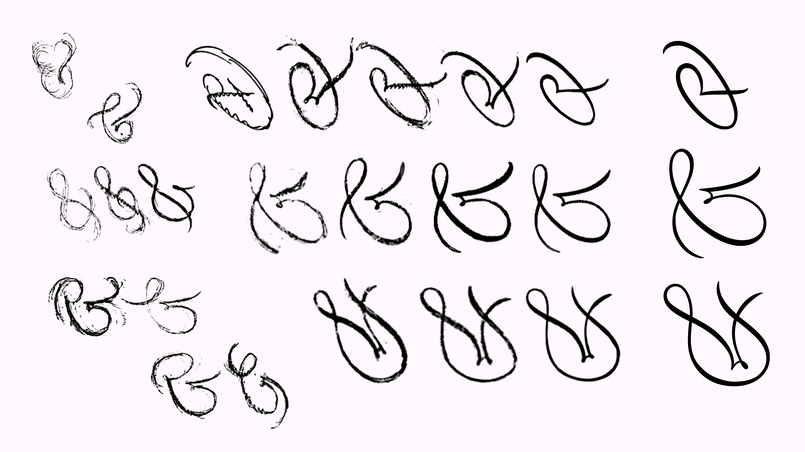

Process
Antiphony is an exercise in extremity, excess, and developing continuity through opposing styles. I create oppositions through multiple vectors: contrast, italic slant, and tool influence. The process involved a lot of trial and error; finding the most extreme versions I could make, then molding them into a cohesive system.
These were the first sketches of what became Antiphony. I didn’t have any expectations for them, but I did enjoy playing around with alternate letter shapes. I started thinking about what it could look like as a thin or bold, and played with some forward and backward movement.
By drawing over my sketches with straight lines in a low-fidelity approach, I was able to create a typeable lowercase in minutes. Then, I could do simple slanting and re-sketching to create an italic and reverse-italic, and it was easy to manufacture a rough bold that I could interpolate. Through this process, I was able to rapidly see a broad view of what the family could look like.
 I noticed that the most extreme slants got (slightly) more legible when turned 90°. I was intrigued by this, so I sketched over the low-fidelity text with a pointed-nib pen in mind—adding thickness only to the downstrokes.
I noticed that the most extreme slants got (slightly) more legible when turned 90°. I was intrigued by this, so I sketched over the low-fidelity text with a pointed-nib pen in mind—adding thickness only to the downstrokes.
Here is an example of a problem I had to solve. The two styles here didn’t have a strong enough connection, so I altered the design of both to fit into the system.
The range of styles I was aiming for—Display, heading, and text.
Design references for Antiphony. Sütterlin script, Unger-Fraktur revival.
This is the model I made for myself to justify where the thicks and thins were going. If you imagine a pointed nib pen, the heaviest the stroke can be is holding the pen straight down, and applying maximum pressure on the downstroke, while the upstrokes are always light.
Optimizing for typesetting at 45°
One of the more difficult aspects of drawing Antiphony was getting the overall impression of the weight and contrast to match across the reverse italic and the regular italic, due to the opposite contrast and constructions. It’s an ongoing process.

Ampersand Darwinism
Here is the final overview of styles at the end of the program. Although I didn’t have time to get to the text styles I initially wanted to include, I was very happy with the collection of styles I had made.